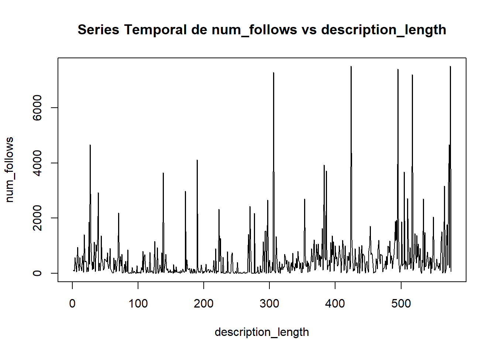
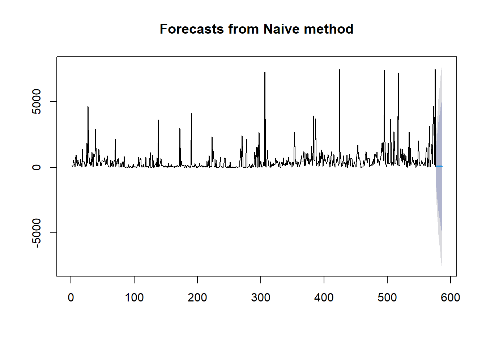

Un análisis de series temporales en análisis de datos es una técnica utilizada para examinar y modelar datos que se recopilan y ordenan cronológicamente. El objetivo principal es identificar patrones, tendencias y estacionalidades en los datos a lo largo del tiempo para realizar predicciones futuras, entender comportamientos pasados y tomar decisiones informadas
7.1 Importación de las librerías y Dataset
Primero, antes de comenzar con el análisis de series temporales, importaremos todas las librerías necesarias para aplicar los diferentes datos, además de importar el Dataset train.csv.
library(tidyverse)
Warning: package 'lubridate' was built under R version 4.3.3
── Attaching core tidyverse packages ──────────────────────── tidyverse 2.0.0 ──
✔ dplyr 1.1.4 ✔ readr 2.1.5
✔ forcats 1.0.0 ✔ stringr 1.5.1
✔ ggplot2 3.5.0 ✔ tibble 3.2.1
✔ lubridate 1.9.3 ✔ tidyr 1.3.1
✔ purrr 1.0.2
── Conflicts ────────────────────────────────────────── tidyverse_conflicts() ──
✖ dplyr::filter() masks stats::filter()
✖ dplyr::lag() masks stats::lag()
ℹ Use the conflicted package (<http://conflicted.r-lib.org/>) to force all conflicts to become errors
library(readr) library(magrittr)
Attaching package: 'magrittr'
The following object is masked from 'package:purrr':
set_names
The following object is masked from 'package:tidyr':
extract
library(TTR)
Warning: package 'TTR' was built under R version 4.3.3
library(forecast)
Warning: package 'forecast' was built under R version 4.3.3
Registered S3 method overwritten by 'quantmod':
method from
as.zoo.data.frame zoo
train <-read_csv("train.csv")
Rows: 576 Columns: 12
── Column specification ────────────────────────────────────────────────────────
Delimiter: ","
dbl (12): profile pic, nums/length username, fullname words, nums/length ful...
ℹ Use `spec()` to retrieve the full column specification for this data.
ℹ Specify the column types or set `show_col_types = FALSE` to quiet this message.
Como ya tenemos todo bien importado, comenzamos.
7.2 Análisis de los datos
Antes de comenzar con lo principal, vamos a analizar si el dataset es apto para poder sacar alguna información importante sobre las series temporales.
Normalmente, los datasets válidos para series temporales son de la clase ts o tienen en sus datos alguna variable relacionado con el tiempo.
Sin embargo, al ser nuestro dataset sobre cuentas de instagram, no presenta ninguna de estas características. Además vamos a intentar utilizar el método time, a ver si conseguimos algo de información.
#time(train)#Error in attr(x, "tsp") <- c(1, NROW(x), 1) : #parámetros no válidos para series temporales
Como podemos observar, este dataset no es válido para series temporales.
7.3 Componentes de Series Temporales
Aunque no sea válido, vamos a ver si conseguimos sacar algo de información con los componentes que nos facilitan el análisis de series temporales.
#ggseasonplot(train, col = rainbow(12), year.labels = TRUE)#Error in ggseasonplot(train, col = rainbow(12), year.labels = TRUE) : #autoplot.seasonplot requires a ts object, use x=objectclass(train)
[1] "spec_tbl_df" "tbl_df" "tbl" "data.frame"
Como podemos ver, al ser no ser un objeto de serie temporal, no es posible hacer nada con las librerias forecast y TTR.
7.4 Conversión a un objeto de serie temporal
Como de base no podemos realizar ninguna operación y no podemos sacar ninguna información al respecto, vamos a intentar convertir nuestro dataset en uno apto para hacerlo.
Para ello podríamos convertir alguna columna de nuestro dataset en un serie temporal, pero no tenemos ni índices de tiempo ni tenemos ninguna información adicional que nos indique cada cuanto tiempo se ha analizado la cuenta.
Por lo tanto, voy a asumir que la columna description_lenght puede ser tratada como el índice del tiempo. En este caso convertiremos la columna #follows en una serie temporal.
train_desc <- train[order(train$`description length`),]num_follows_ts <-ts(train_desc$`#follows`, frequency=1)plot(num_follows_ts, ylab ="num_follows", xlab ="description_length", main ="Series Temporal de num_follows vs description_length")

Ya tenemos una serie temporal, aunque sabemos que no tiene sentido, por lo que toda información que tomemos va a ser inválidas ya que nos estamos basando únicamente en suposiciones.
#ggseasonplot(num_follows_ts, col = rainbow(length(unique(train$`description length`))), year.labels = TRUE)#Error in ggseasonplot(num_follows_ts, col = rainbow(length(unique(train$`description length`))), : #Data are not seasonal
Aquí hay un ejemplo, al no haber un índice de tiempo real, no podemos hacer el análisis de las estaciones, ya que los datos no están sacados para este fin.
library(ggplot2)#ggsubseriesplot(num_follows_ts) +# ylab("N. Follows") +# ggtitle("Seasonal subseries plot: num_follows_ts")#Error in ggsubseriesplot(num_follows_ts) : Data are not seasonal
7.5 Métodos de pronóstico
Vamos a intentar probar a realizar algún pronóstico, a ver si podemos sacar algo.
h <-10mdata.num_follows <-naive(num_follows_ts, h)plot(mdata.num_follows)

7.6 Conclusión
He llegado a la conclusión de que con este conjunto de datos no es posible hacer un análisis de series temporales ya que toda información que saquemos, al no haber índices de tiempo ni variables que nos indiquen cuando ha ocurrido, será muy dispar y difícil de analizar.
Además, si asumimos una variable cualquiera como índice de tiempo, al ser los datos o 1 o 0 o datos muy dispares, nos darán como resultado gráficas muy difíciles de interpretar y al no estar hecho para series temporales, las estaciones no están muy bien definidas.